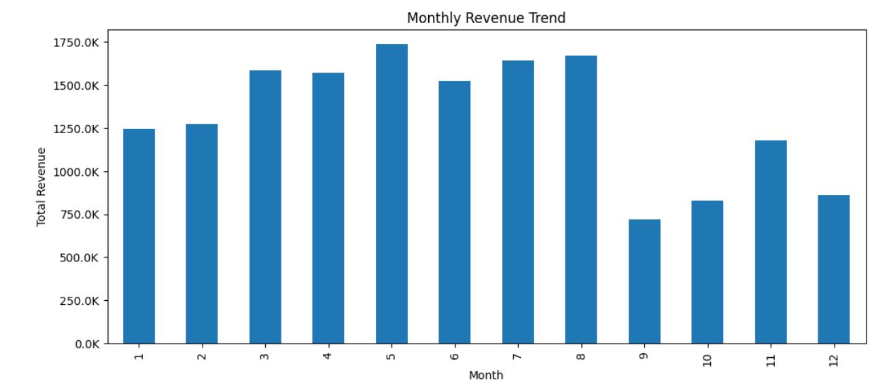
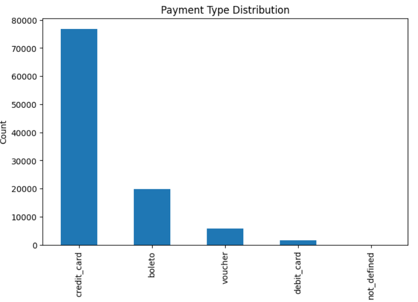
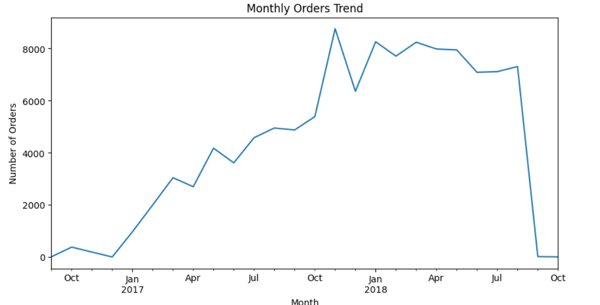

Olist E-commerce Data Analysis
E-commerce information was distributed across multiple datasets, making it difficult to understand customer behavior, sales trends, product performance, and delivery experiences in one place.
Delivery delays were associated with lower customer review scores. Electronics generated strong revenue despite fewer orders, while credit cards were the most commonly used payment method.
Cleaned and processed 6 relational datasets using Python and Pandas, handled missing values, performed feature engineering, and merged the data for exploratory analysis. Created visualizations to identify sales trends, payment preferences, product performance, and delivery patterns.
- Delivery delays and customer satisfaction
- Revenue and monthly sales trends
- Product category performance
- Customer payment preferences
Key areas explored during the analysis.



Olist E-commerce Analysis – Project Screenshot.
| Dataset | Analysis Focus |
|---|---|
| Customers | Customer information |
| Orders | Order trends |
| Order Items | Sales and products |
| Products | Category analysis |
| Payments | Payment preferences |
| Reviews | Customer satisfaction |